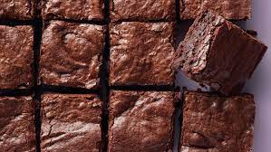

Brownies
Chocolate Overload
If you love chocolate this will be the treat for you!
Ingredients
- Sugar
- Butter
- Cocoapowder
- Eggs
- oil
- Vanilla extract
How to make
- First, mix together the dry and wet ingredients in two separate bowls. Combine the sugar, flour, powdered sugar, cocoa powder, chocolate chips, and salt in a medium bowl. Then, whisk together the eggs, olive oil, and water in a large one.
- Next, combine the wet and dry ingredients. Sprinkle the dry mixture over the wet one, and fold until just combined. The batter will be thick
- Then, pour the batter into an 8×8 inch baking pan lined with parchment paper. Use a rubber spatula to spread it to all four sides of the pan and to smooth the top.
- Transfer the pan to a 325-degree oven and bake for 40 to 45 minutes, until a toothpick inserted comes out with a few crumbs attached. Allow the brownies to cool completely before slicing and serving.